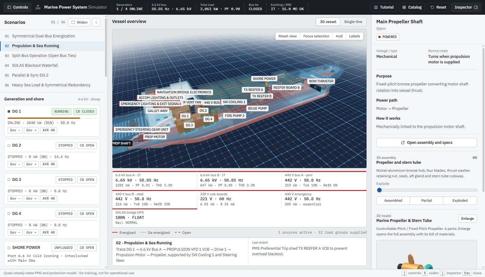
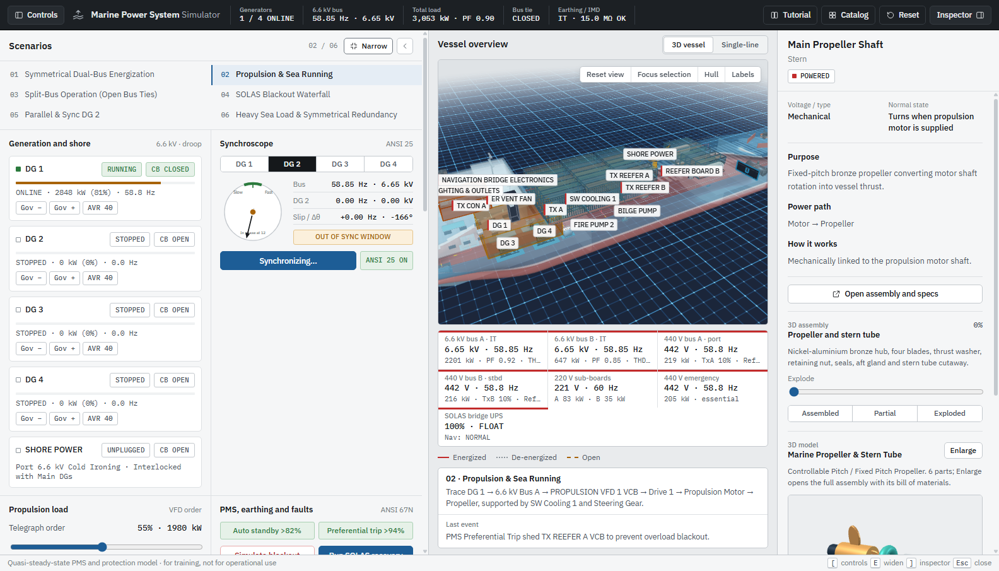
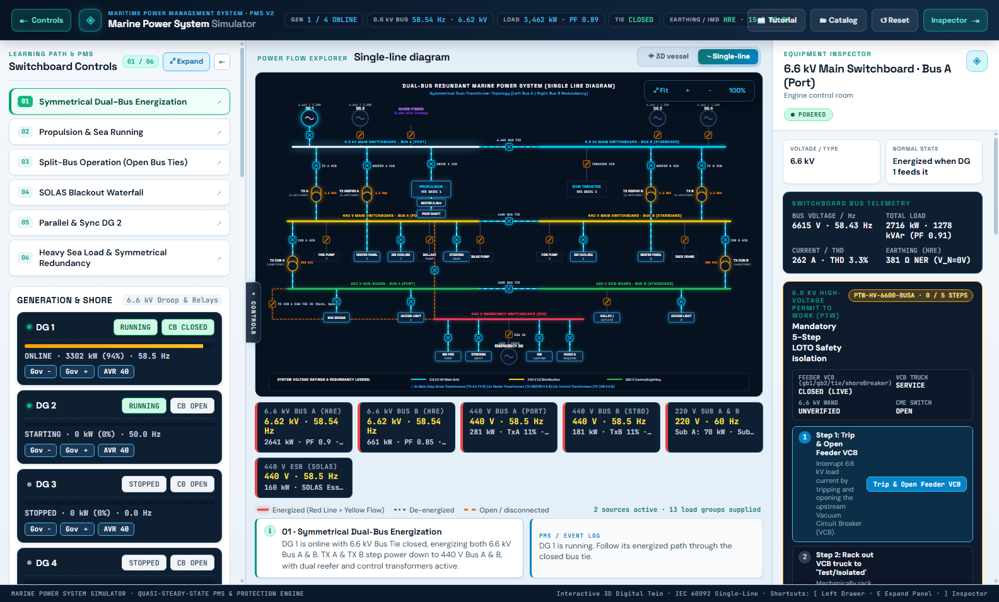
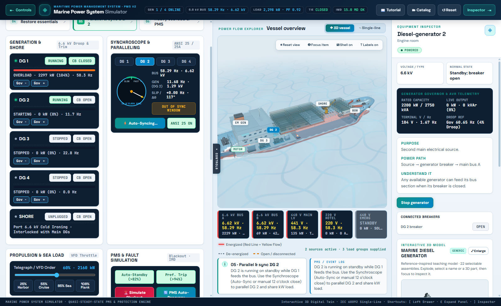
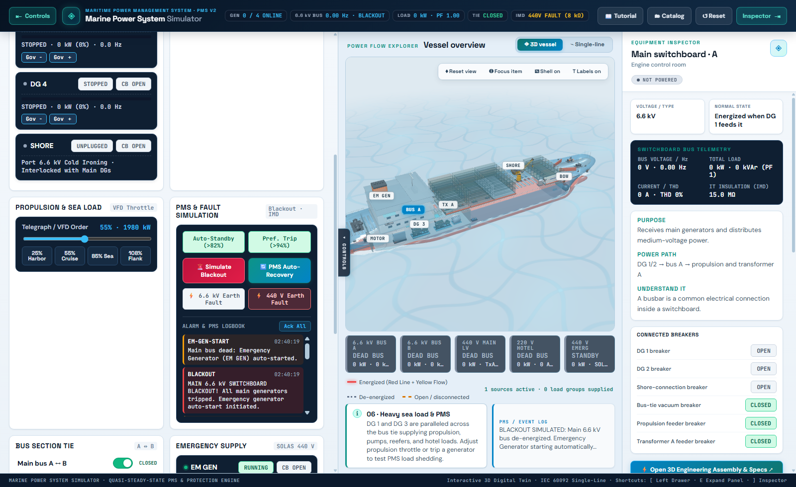
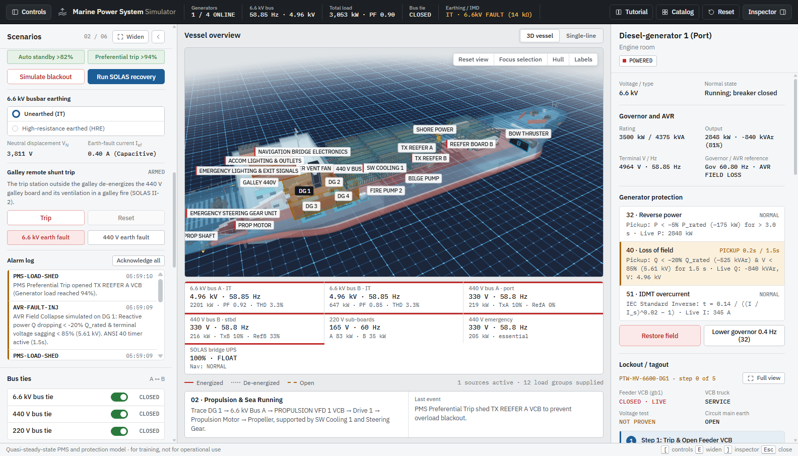
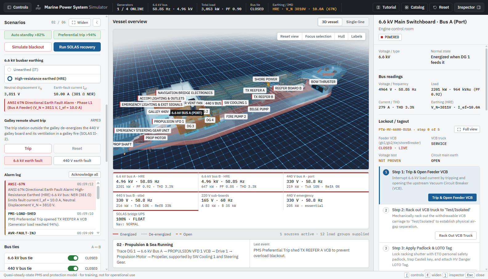
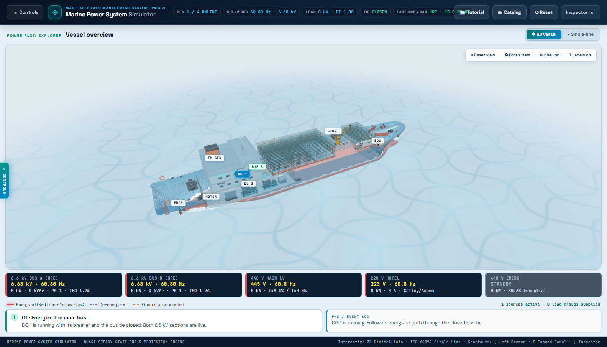
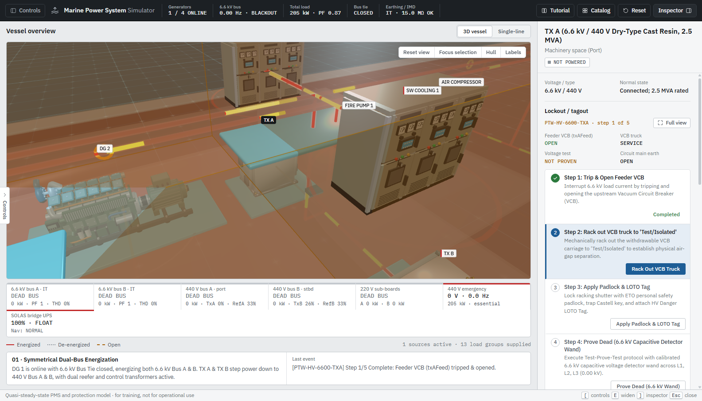

BS Electrical Engineering · Electro-Technical Officer (ETO) Training Lab
Marine High-Voltage (6.6 kV / 440 V / 220 V) Power System Simulator
Step-by-step operational guide for Switchboard & PMS control, Generator Paralleling & Synchroscope operation, Glowing Red/Yellow Power Flow monitoring, and Blackout / Fault Recovery drills.
Glowing Red Line = Energized Bus / Feeder Cable (6.6 kV / 440 V / 220 V)
Glowing Yellow Flowing Animation = Active Real-Power Flow Direction
The simulator models a complete marine diesel-electric power plant inside a translucent hull so future ETO officers can see both physical compartment locations and live electrical power distribution simultaneously.
- Glowing Red Power Cables: Any feeder or bus tie that is actively energized glows bright red in both the 3D Vessel View and the Single-Line Diagram.
- Glowing Yellow Flowing Pulses: Animated yellow energy pulses travel from the generating source (DGs, Emergency Gen, or Shore Connection) through the switchboards, transformers, and drives to every running consumer load.
- Camera Navigation: Left-drag to orbit, right-drag to pan, scroll wheel to zoom, or click any 3D equipment model to focus the camera and open its ETO Inspector card on the right.

Fig 1 — 3D Vessel View ("02 · Underway") showing glowing red energized feeders and glowing yellow power flow pulses from DG 1 & DG 2 to the aft propulsion motor.
The left Switchboard & PMS drawer has been redesigned with larger, high-contrast typography and can be expanded into a wide 2-column engineering console for intensive simulation drills:
- Click ⤢ Expand in the top-right corner of the left drawer (or press E) to widen the panel to 680 px and arrange sections side-by-side in a 2-column grid.
- Click ⤡ Compact (or press E again) to return to the standard 390 px drawer, or click ◀ Hide (or press [) to collapse the drawer completely for an unobstructed 3D view.

Fig 2 — Expanded 2-Column Simulation Control Console (press E or click "⤢ Expand") displaying Presets, Synchroscope, PMS Protection, Alarm Logbook, and Source Breakers side by side.
Switch to the Single-Line Diagram tab in the top bar (or press 2) to inspect the symmetrical dual-bus architecture (Port Bus A / Starboard Bus B) with standard IEC 60092 CAD single-line topology:
- Symmetrical Redundancy: Dual main 2.5 MVA transformers (TX A & TX B), dual 1.5 MVA reefer transformers (TX REEFER A & B), and dual 500 kVA control transformers (TX CON A & B).
- Single Clean Line Per Equipment: Every feeder drops directly from its busbar through its square
[X] circuit breaker and transformer to its equipment box.
- Dynamic Voltage & Power Flow: High-contrast voltage coding (6.6 kV Cyan, 440 V Gold, 220 V Green, 440 V ESB Coral Red) with real-time power flow animations.

Fig 3 — Symmetrical Dual-Bus Redundant Single-Line Diagram (IEC 60092 CAD standard) featuring continuous horizontal busbars, single clean feeders per equipment, interlocking circle transformers, and square [X] circuit breakers.
Before connecting an incoming diesel generator to a live 6.6 kV bus, an ETO must match frequency, voltage, and phase angle (`Δθ ≈ 0°`, 12 o'clock on the synchroscope) to prevent destructive out-of-phase torque:
- Click Scenario 05 · Parallel & sync DG 2 (or click the SYNC button on any offline generator while the 6.6 kV bus is live).
- Watch the rotating Synchroscope needle. If the needle rotates clockwise (FAST), incoming frequency is slightly higher than the bus.
- Use Gov −0.05 Hz / Gov +0.05 Hz to adjust the incoming generator's speed, or click Auto-Sync to engage automatic governor speed matching.
- When the needle enters the green 12 o'clock window (|Δθ| < 15°, |Δf| < 0.35 Hz), click Close Breaker (ACB) to parallel the generator onto the 6.6 kV bus!

Fig 4 — Synchroscope & Paralleling Panel active on DG 2 showing live phase angle Δθ, slip frequency Δf, Governor Trim controls, and ACB closure readiness.
Test marine Power Management System (PMS) protection relays and casualty recovery procedures using the PMS Protection & Faults panel:
- Auto-Standby DG Start: When enabled, if a blackout occurs or bus load exceeds 85%, the PMS automatically cranks, synchronizes, and closes the next standby generator after a 3.5 s start delay.
- Pref. Trip (>94%): Automatically sheds non-essential hotel loads (Accommodation HVAC, Galley, Reefer sub-bus, and 220 V hotel outlets) before an overload trips the main generators.
- Trip Online DG: Simulates an immediate mechanical/electrical trip of an online main generator to test load transfer or blackout recovery.
- 6.6 kV & 440 V Earth Fault Injection: Simulates insulation breakdown (`IR = 0.02 MΩ` on 440 V or `IR = 0.08 MΩ` on 6.6 kV) and triggers an Insulation Monitoring Device (IMD) alarm in the ETO Alarm Logbook.

Fig 5 — PMS Fault & Protection drill showing an injected Earth Fault, generator trip alarm, and timestamped entries in the ETO Alarm Logbook.
The electrical architecture has been fully upgraded to a redundant Symmetrical Dual-Transformer Topology reflecting modern marine class rules (DNV-GL / Lloyd's Register DP-2 classification):
- Dual 6.6 kV / 440 V Main Step-Down Transformers (2.5 MVA each): TX A (Port) feeds 440 V Bus A; TX B (Starboard) feeds 440 V Bus B. If one transformer trips, the 440 V Bus Tie automatically allows the surviving transformer to carry all critical hotel and auxiliary loads.
- Dual 6.6 kV / 440 V Dedicated Reefer Transformers (1.5 MVA each): TX REEFER A & B feed refrigerated container boards directly from 6.6 kV, isolating heavy compressor motor inrushes from sensitive engine room auxiliaries.
- Dual 440 V / 220 V Control & Hotel Transformers (500 kVA each): TX CON A & B provide galvanized isolation and voltage step-down for Navigation Bridge electronics, Galley, and Accommodation lighting.
- Three Symmetrical Bus Ties:
- 6.6 kV Bus Tie: Operates between Bus A and Bus B for synchronized parallel generation or split-bus islanding.
- 440 V Bus Tie: Links Port 440 V Bus A and Starboard 440 V Bus B.
- 220 V Bus Tie: Links 220 V Sub-Board A and Sub-Board B for complete domestic lighting redundancy.
Fig 6 — Symmetrical Dual-Transformer Architecture showing mirrored Port and Starboard distribution tiers (6.6 kV, 440 V, and 220 V) with independent cross-tie breakers.
The simulator implements high-fidelity IEEE / ANSI protective relay algorithms governing all 6.6 kV diesel generators and heavy feeder breakers:

Fig 7 — Protective Relay Engine showing live ANSI 32 Reverse Power, ANSI 40 Loss of Field status with AVR Trip simulator, and IEC Standard Inverse (ANSI 51) IDMT time-overcurrent curve readout.
Marine high-voltage installations require specialized earthing architectures to control ground fault currents while maintaining service continuity:

Fig 8 — High-Resistance Earthing (HRE) drill showing 381 Ω NER active, fault current clamped to 10.0 A, neutral displacement V_N = 3,810 V, and ANSI 67N Directional Earth Fault alarm.
Under SOLAS Chapter II-1 regulations, reconnecting all electrical consumers simultaneously upon restoring switchboard busbars causes destructive inrush current spikes and generator blackout re-trips. The simulator enforces a strict 5-stage sequential restoration waterfall:
- Stage 1 (T = 0s – 10s) — Emergency DG to ESB: Emergency Diesel Generator cranks and connects within 10 seconds to restore Emergency Switchboard (ESB) loads: Steering Gear, Navigation Radios, Radar, and Escape Route Lighting.
- Stage 2 (T = 10s – 20s) — Main DG & Stage 1 Auxiliaries: Main DG 1 synchronizes onto the 6.6 kV bus, restoring Main Engine Lube Oil and Jacket Water Circulating pumps.
- Stage 3 (T = 20s – 30s) — Stage 2 Auxiliaries: Sea Water Cooling and Heavy Fuel Oil (HFO) Booster supply pumps energize once lube oil pressure stabilizes.
- Stage 4 (T = 30s – 45s) — Essential Services: Starting Air Compressors and Auxiliary Boiler feed pumps restart to prepare for full propulsion readiness.
- Stage 5 (T > 45s) — Non-Essential & Heavy Loads: Engine Room Ventilation Fans, Air Conditioning Chillers, Deck Cargo Cranes, and Aft / Bow Propulsion Thrusters are released for operation.
A dynamic visual progress bar at the bottom HUD displays the active stage name, countdown timer, percentage completion, and load shedding indicators during restoration.

Fig 9 — SOLAS Blackout Recovery 5-Stage Sequential Waterfall active with dynamic HUD progress bar showing stage progression from emergency steering gear up to heavy propulsion thrusters.
In compliance with high-voltage marine safety codes (IEC 60092-503 and High Voltage Permit to Work frameworks), opening cubicle doors or exploding 3D CAD assemblies of 6.6 kV transformers, switchboards, or propulsion motors strictly requires completion of a 5-step safety isolation protocol:
- Step 1 — Trip & Open Feeder VCB: Disconnect the circuit breaker feeding the high-voltage component.
- Step 2 — Rack Out VCB Truck to 'Test / Isolated': Withdraw the draw-out vacuum breaker truck to physically separate primary disconnect stabs behind grounded safety shutters.
- Step 3 — Apply Padlock & LOTO Danger Tag: Lock the racking mechanism shutter with a physical padlock and authorized safety lockout tag.
- Step 4 — Prove Dead with 6.6 kV Capacitive Wand: Test the conductor terminals with a rated 6.6 kV capacitive voltage detector wand (verified against an approved proving unit immediately prior).
- Step 5 — Close Circuit Main Earth (CME) Switch: Engage the mechanical earthing switch to bond all three high-voltage phases directly to the steel vessel hull.
If an ETO attempts to open or explode an un-isolated 6.6 kV assembly without completing these 5 steps, the simulator displays an active "⚡ ARC-FLASH VIOLATION WARNING" badge on the equipment card.

Fig 10 — Interactive 6.6 kV Permit to Work (PTW) and 5-Step LOTO checklist showing VCB trip, truck racking, padlock tagout, prove-dead wand testing, and CME hull grounding.
3D Vessel View1
Single-Line Diagram2
Expand / Compact Left ConsoleE
Show / Hide Left Drawer[
Reset 3D Camera ViewR
Close Modal / Clear SelectionEsc